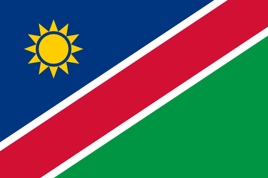
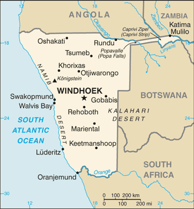

Namibian tasavalta eli Namibia on noin kahden miljoonan asukkaan valtio Lounais-Afrikassa, Atlantin rannalla. Namibian naapurimaita ovat Angola ja Sambia pohjoisessa, Botswana idässä ja etelässä Etelä-Afrikan tasavalta, jonka alaisuudesta Namibia itsenäistyi vuonna 1990. Namibian on sanottu olleen viimeinen siirtomaa, joka itsenäistyi. Etelä-Afrikan vallan aikaisesta sissijärjestö SWAPO:sta on kehittynyt maan nykyinen hallitseva puolue. Kuivassa ja kuumassa Namibiassa on useita luonnonpuistoja, jotka houkuttavat matkailijoita. Maan vientituloista puolet saadaan kaivostoiminnasta: timantteja, kultaa, sinkkiä, lyijyä ja uraania.

| Puhutut kielet = |
englanti |
| asukasmäärä = |
2 198 406 |
| rahayksikkö = |
Namibian dollari |
| BKT = |
17,79miljardia USD |
luonto ja ilmasto
Namibian ilmasto vaihtelee aavikkoilmastosta subtrooppiseen ja on suurimmaksi osaksi hyvin kuivaa ja kuumaa. Keskusylängöllä sadetta saadaan vähän ja epäsäännöllisesti, joten siellä kasvillisuus koostuu pääasiassa hyvin kuivuutta kestävistä, pensassavannille tyypillisistä kasvilajeista. Pohjoisessa Ambomaalla sadetta saadaan enemmän, joten siellä tavataan myös makalani-palmumetsikköjä.
Rannikon ilmastoa viilentää sen tuntumassa virtaava Benguelan merivirta.
Kartta ja kaupungit

Namibia jakautuuu 13 alueeseen
Urheilu
Suosituin urheilulaji Namibiassa on jalkapallo, jota harrastaa noin 100 000 maan asukasta. Maan miesten edustusjoukkue on osallistunut Afrikan-mestaruuskilpailuihin kahdesti, vuosina 1998 ja 2008. Se jäi kuitenkin alkulohkoon molemmilla kerroilla. Joukkue on ollut FIFA-rankingissa parhaimmillaan 68. sijalla.
Namibia on osallistunut olympialaisiin yhteensä viisi kertaa vuoden 1992 kisoista lähtien. Maan ehkä tunnetuin urheilija on sen ainoa olympiamitalisti Frankie Fredericks, joka on voittanut neljä olympiamitalia pikajuoksusta